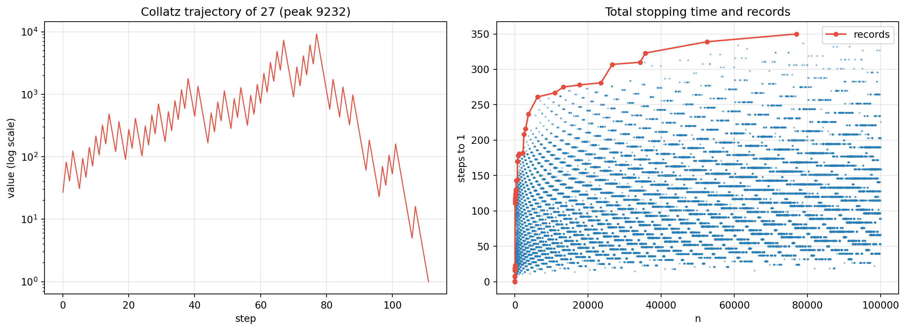

Code
import numpy as np
import matplotlib.pyplot as plt
def collatz_orbit(n):
orbit = [n]
while n != 1:
n = n // 2 if n % 2 == 0 else 3 * n + 1
orbit.append(n)
return orbit
def total_stopping_time(n):
steps = 0
while n != 1:
n = n // 2 if n % 2 == 0 else 3 * n + 1
steps += 1
return steps
orb27 = collatz_orbit(27)
print("=== THE ORBIT OF 27 ===")
print(f" length={len(orb27)-1} steps, peak={max(orb27)}")
print(f" first 20 values: {orb27[:20]}")
N = 100_000
S = np.array([total_stopping_time(n) for n in range(1, N + 1)])
records = []
best = -1
for i, s in enumerate(S, start=1):
if s > best:
best = s
records.append((i, s))
print(f"\n=== RECORD TOTAL STOPPING TIMES up to {N:,} ===")
for n, s in records[-8:]:
print(f" n={n:>6} -> {s} steps")
fig, axes = plt.subplots(1, 2, figsize=(13, 4.8))
axes[0].plot(orb27, color="#e74c3c", lw=1)
axes[0].set_yscale("log")
axes[0].set_title("Collatz trajectory of 27 (peak 9232)")
axes[0].set_xlabel("step"); axes[0].set_ylabel("value (log scale)"); axes[0].grid(alpha=0.3)
axes[1].scatter(range(1, N + 1), S, s=1, color="#2980b9", alpha=0.4)
rec_n, rec_s = zip(*records)
axes[1].plot(rec_n, rec_s, "o-", color="#e74c3c", ms=4, label="records")
axes[1].set_title("Total stopping time and records")
axes[1].set_xlabel("n"); axes[1].set_ylabel("steps to 1"); axes[1].legend(); axes[1].grid(alpha=0.3)
plt.tight_layout(); plt.show()
print(f"\n mean stopping time = {S.mean():.1f}; max = {S.max()} at n={S.argmax()+1}")
print(f" mean/ln(n) at n={N}: {S.mean()/np.log(N):.2f} (heuristic ~ 10-14)")=== THE ORBIT OF 27 ===
length=111 steps, peak=9232
first 20 values: [27, 82, 41, 124, 62, 31, 94, 47, 142, 71, 214, 107, 322, 161, 484, 242, 121, 364, 182, 91]
=== RECORD TOTAL STOPPING TIMES up to 100,000 ===
n= 13255 -> 275 steps
n= 17647 -> 278 steps
n= 23529 -> 281 steps
n= 26623 -> 307 steps
n= 34239 -> 310 steps
n= 35655 -> 323 steps
n= 52527 -> 339 steps
n= 77031 -> 350 steps
mean stopping time = 107.5; max = 350 at n=77031
mean/ln(n) at n=100000: 9.34 (heuristic ~ 10-14)